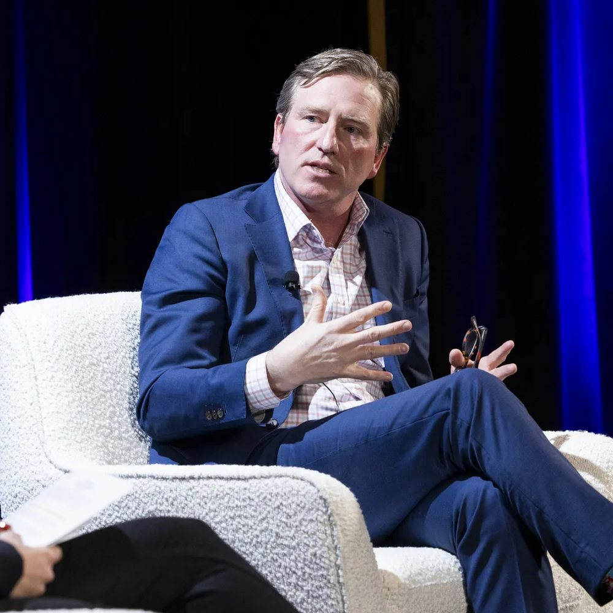
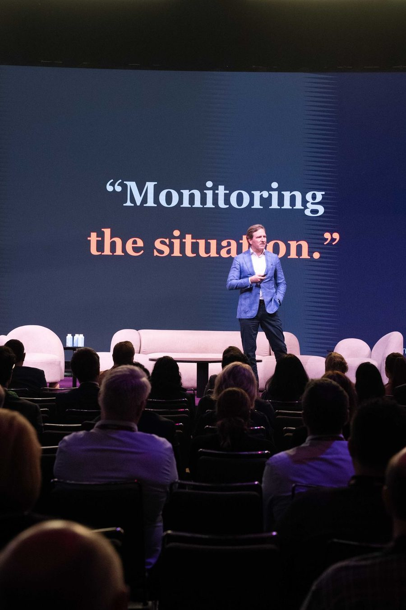
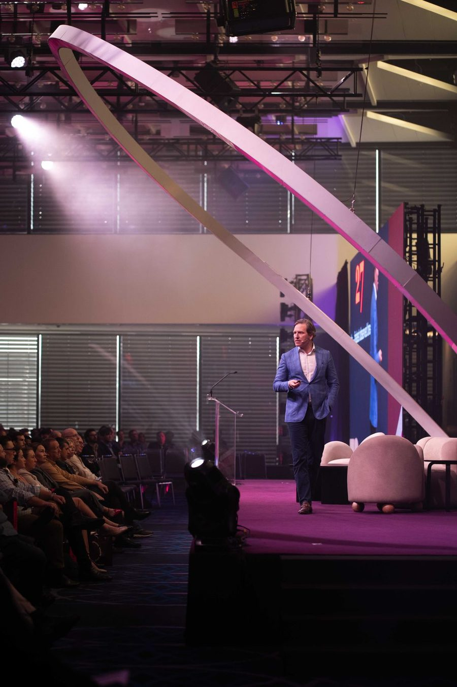

Latest · Face the Nation, CBS · Outages, AI and the race to patch →
Plain talk.
Hard problems.
Cyber, AI and geopolitical risk advice for boards and executives.
Chris Krebs ran CISA, the federal agency that protects U.S. critical infrastructure, through the 2020 election. Now he works with boards and executives on the risks that land in front of them.

What we’re seeing
It is already later than you think. AI is finding software flaws faster than companies can fix them, and attackers are using it to hit more targets at once.
What we do
Advisory.
Geopolitical and Technology Risk
Briefings for leadership teams and boards on the U.S.-China race for AI and the chips that power it, how Washington is responding, and what it means for your business.
Recent work includes briefings for the boards of a global systemically important bank, a major U.S. airline and a national industry association.
Board and Executive Advisory
A straight assessment of whether your cyber and AI programs match your actual exposure, and what to fix first.
Recent work includes cybersecurity and AI governance reviews, counsel to global CISOs on emerging nation-state threats, and an ongoing engagement with the CIO and CISO of a major European bank.
Crisis and Resilience
Executive exercises built on scenarios drawn from current events and where they are heading, to test how leadership responds as the security and political environment deteriorates. Response planning before an incident, and direct advice to leadership during one.
Recent work includes advising companies responding to nation-state threat actors and to criminals using agentic offensive frameworks; geopolitical crisis simulations for public-company boards, including a scenario in which the White House singles out the company.
Leadership
Chris Krebs
As the first Director of the Cybersecurity and Infrastructure Security Agency (CISA), Chris led the federal government's civilian cyber defense mission, working with critical infrastructure operators, technology companies, and state and local election officials through the 2020 presidential election.
He went on to co-found the Krebs Stamos Group, which was acquired by SentinelOne, where he served as Chief Intelligence and Public Policy Officer. Earlier, he led U.S. cybersecurity policy at Microsoft. He is a CBS News contributor.


Keynotes at ATMOS SPHERE 2026, Sydney, and RETTC OPTECH 2026, Las Vegas.
Media and speaking
Writing and commentary.
A CBS News contributor and a regular voice on cyber and AI security across national television, radio and print.
Writing
- Hormuz fertiliser block will upend world’s food production ↗Op-ed · Financial Times
- America’s messy cyber regulations are no match for its adversaries ↗Op-ed · Financial Times
Television
- Outages, AI, and the race to patch ↗Face the Nation · CBS · Nov 22, 2026
- On AI finding cyber vulnerabilities: “It’ll get worse before it gets better” ↗Squawk Box · CNBC · Oct 23, 2026
- “We have to keep the frontier chips out of the hands of China” ↗CNBC · May 13, 2026
- Also on Today (NBC) and PBS NewsHour. Quoted in the Financial Times, The Wall Street Journal, The Economist and The New York Times.
Podcasts and radio
- Risky BusinessRecurring guest co-host
- On with Kara SwisherPreventing war with China, with Dmitri Alperovitch
- Here & NowNPR · Nov 18, 2026
Course
- Cyberwarfare: The Front Line Is YouMasterClass
Events and keynotes
- ATMOS SPHERE 2026Keynote · Sydney · 2026
- RSA ConferenceSpeaker · San Francisco
- Black Hat USAKeynote · Las Vegas
Get in touch.
Inquiries come to the firm directly and are handled in confidence.